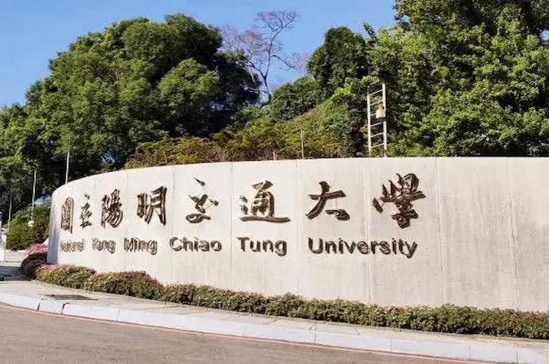
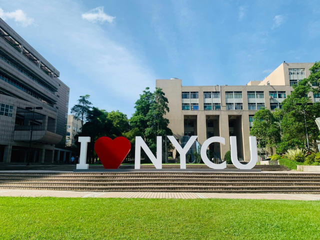

The greatest invention of the twentieth century - the computer, since 1964 integrated circuit computing Since the advent of the computer in the United States, it has developed rapidly, coupled with the popularity of the Internet Later, it impacted all levels of society. In the past decade, Taiwan has entered an information society and China has become a major country in the information industry. Taking 2003 as an example, the total output value of the information industry was Ranked fourth in the world.

Based upon the ACM/IEEE-CS Joint Computing Curriculum, the Department devised a comprehensive undergraduate curriculum featuring a large number of technical elective courses, senior project topics, and overseas study opportunities.
It also pays special attention to hands-on practice, programming skill development, and creativity incubation. The entire curriculum is divided into three programs with a specific concentration. The Network Engineering Program includes topics such as broadband networks, wireless communication, mobile computing, and network security.
In addition to the regular classes, the Department also arranges exchange programs with top-notch education and research institutes and distinguished lectures offered by world-renowned scholars.
All these are a part of the holistic training offered to our students as the preparation for their careers as global IT professionals.
.